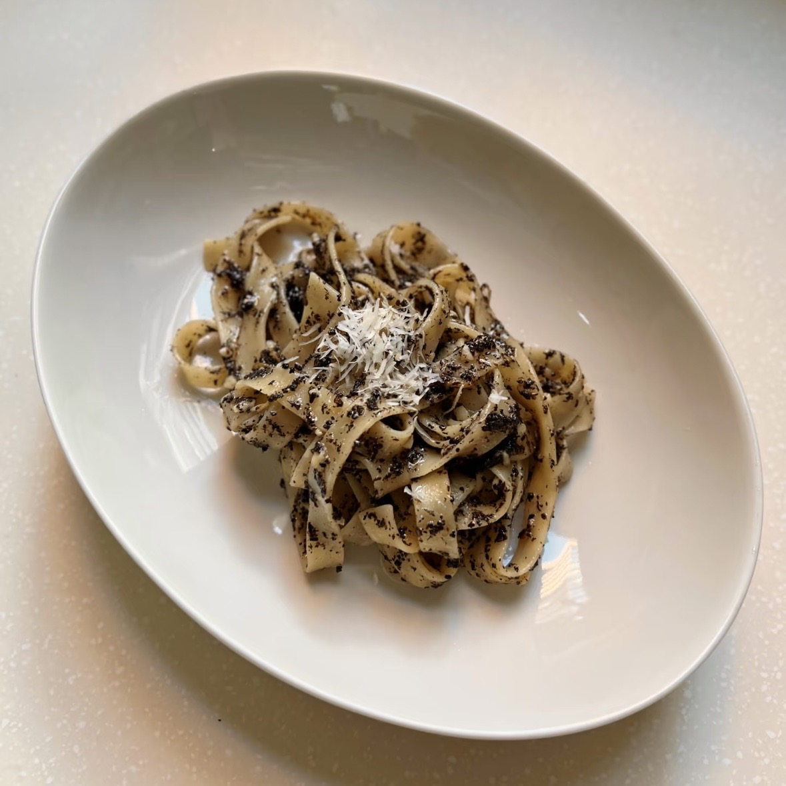

Pasta / Dinner
Black Truffle Cream Pasta
A creamy and flavorful pasta with mushrooms and truffle oil. This recipe is simple to make and works well for a quick dinner.

Ingredients
- 200g pasta
- 150g mushrooms
- 2 cloves of garlic
- 1 tablespoon butter
- 1 cup heavy cream
- 2 tablespoons grated Parmesan cheese
- 1 teaspoon truffle oil
- Salt
- Black pepper
- Truffle salt (optional)
Instructions
- Bring a pot of salted water to a boil and cook the pasta according to the package instructions.
- While the pasta is cooking, slice the mushrooms and mince the garlic.
- Melt the butter in a pan over medium heat.
- Add the mushrooms and cook until they become soft and lightly browned.
- Add the garlic and cook for about 30 seconds.
- Pour in the heavy cream and stir until the sauce begins to thicken.
- Add the Parmesan cheese and mix well.
- Add the cooked pasta to the sauce and toss until evenly coated.
- Turn off the heat and add the truffle oil.
- Season with salt, black pepper, and truffle salt if desired.
More About Truffles
You can learn more about truffles and how they are used in cooking on Wikipedia.